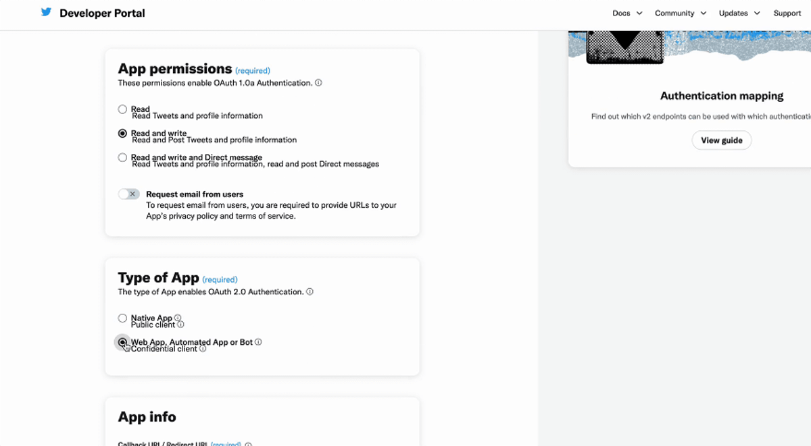
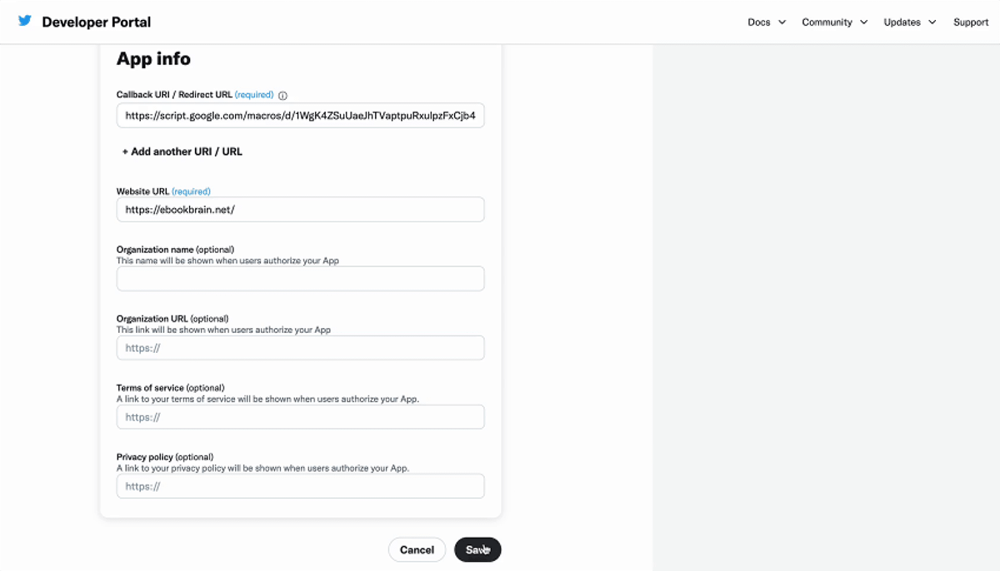

はじめに
お買い上げありがとうございます。
早速ですがCraft Twixのツールを使えるようにしましょう。
作業の流れとしては、まずスプレッドシートを取得し、その後にTwitter APIを取得してください。スプレッドシートを先に取得する理由は、申請途中でURLが必要だからです。
スプレッドシートの詳しい操作方法については、サイドバーにあるChapterをクリックしたのち、「Craft Twixの使い方」をご参照ください。ただし、Twitter APIを取得しないとツールは使えません。
初回、X(Twitter API)の取得は時間がかかるかもしれませんが、頑張っていきましょう！
スプレッドシートの取得とコピーの作成
まずは次のリンクにアクセスしてください。
その後、スプレッドシートのコピーを作成します。
ファイル > コピーを作成
Googleアカウントでログインしていない場合、スプレッドシートのコピーを作成することはできません。あらかじめログインしておいてください。
提供されているオリジナルのスプレッドシートは編集が禁止されていますが、コピーを作成すれば自由に編集することが可能です。
詳細な手順は、次の解説動画でも確認できます。動画は短いものが多いですが、gifではないので倍速再生も使えます。フルスクリーンも可能なので見にくい場合は拡大してみてください。
動画のように、コピーを作成した後にシートの名前を変更しておくと便利です。WebサイトやX(Twitter)の名前を加えるなど、自分にとってわかりやすい名前が良いでしょう。
カスタムメニューは、スプレッドシートを開いた際に表示される仕様です。そのため、単にコピーを作成しただけでは表示されません。一度ページを再読み込みして表示させましょう。
X(Twitter) API Freeの申請方法
X(Twitter) APIは日々開発が続いているため、多少のフローの変更がある可能性があります。気付いたら更新する予定ですが、あらかじめご了承ください。
基本的な流れは大きく変わらないと考えられますので、そのつもりでお読みいただければ幸いです。どうしても理解できない場合は、サポートにご連絡ください。
まずはX Developer Platform（Twitter Developer Platform）の登録方法からです。次のサイトにアクセスしてください。
X（Twitter）のアカウントは、事前に登録アカウントに紐づけておくと、うっかり別のアカウントに紐づけてしまうようなミスを避けられます。紐づけたくないアカウントはログアウトし、紐づけたいアカウントでログインしておくということです。
- 画面右上の開発者ポータルをクリックします。
- ログインしていない場合は、X(Twitter)でログインします。
画面下のSign up for Free Accountを選びます。
画面が変わると、いくつかの項目が英語で表示されます。必要な事項を入力し、登録を完了します。
各項目を順番に見ていきましょう。
Describe all of your use cases of Twitter’s data and APIという項目は、X(Twitter)のAPIとデータの全ての使用事例を説明してください、という意味です。
X(Twitter)社は昔から日本語対応はやや中途半端な形であるため、またフォーム自体も英語のため、どちらかといえば、英語で記載することをおすすめします。
X(Twitter) Developer Portalの画面は、Chromeで右クリックからも翻訳できます。
右クリック > 日本語に翻訳
以下に申請例を示します。
I am a blogger specializing in app development, programming, design, and self-publishing. I’m crafting a tool that auto-posts pertinent tips and blog content to X. These posts, comprising text, images, and related blog URLs, are designed to adhere to X’s policies and provide value to my followers.
日本語訳は以下の通りです。
私はブロガーで、アプリ開発、プログラミング、デザインの専門サイトを運営います。個人出版もやっています。現在、ブログの記事やお役立ち情報をシェアするツールを開発しています。これらの投稿は、テキスト、画像、そして関連するブログのURLを含むもので、Xの規約に従うことを心がけており、私のフォロワーにとって価値ある情報を提供することを目指しています。
英語が苦手な方は、申請文は日本語で書いたのち、DeepLやOpenAIのChatGPTに翻訳してもらうとよいでしょう。
無料で翻訳するなら、次の2サイトがおすすめです。
慣れていない方は、1つの文を長文にせず、翻訳しやすい日本語を使うとよいです。
例文の専門ジャンルを置き換えたり、複数人で運営している場合、IをWeにすると対応できます。
もちろん参考にしてもらっても結構ですが、それほど難しくないため、なるべくオリジナルの文章で申請するとよいでしょう。
次の3つはチェックボックスをチェックするだけです。
- You understand that you may not resell anything you receive via the Twitter APIs - Twitter APIで受け取ったものを再販してはならないことを理解しています
- You understand your Developer account may be terminated if you violate the Developer Agreement or any of the Incorporated Developer Terms - デベロッパー契約または任意の開発者規約を違反した場合、開発者アカウントが終了することを理解しています
- You accept the Terms & Conditions - 利用規約に同意します
最後にSubmitボタンをおします。
7つのAPIキーをゲットしよう!
管理画面に入ると、プロジェクトとアプリが自動生成されます。
昔から使っている方向けにお知らせとなりますが、以前はプロジェクトとアプリを作成する流れが必要でしたが、面倒が手続きが簡略化されたようです。より簡単になりました。
自動生成されたプロジェクトとアプリは基本的にそのまま使って問題ありません。
アプリは作成済みですが、7つのAPIキーを集めなければなりません。
- Consumer API Key:
- Consumer API Secret:
- Client ID:
- Client Secret:
- Bearer Token:
- Access Token:
- Access Token Secret:
コールバックURLを指定する認証の設定をすると、APIキーを2つ入手できます。
残りの5つは簡単に生成できますので、認証の設定さえ終わればすぐに7つのキーが集まります。
Access Tokenというキーは、コールバックURLを指定した後に作成する必要があるため、先に認証の設定を行ってください。
それでは、キーを探しましょう！
X(Twitter) Developer Portalで認証の設定
X(Twitter) Developer Portalで認証の設定を行います。途中でコールバックURLが必要なります。
動画をご参照の上、文章をお読みください。申し訳ありませんが、この動画は少し比率が異なる上に細かい作業が含まれていますので、拡大して再生することをおすすめします。
まず、X(Twitter) Developer Portalを開きます。
画面左側にあるあなたのアプリ名(xxxxxxxxxxxxxxxxxxxxAccountname)をクリックします。
画面左の[xxxxxxxxxxxxxxxxxxxxAccountname] > User authentication settingsの[Set up]
その後、次の項目を設定します。

- Read and write: ポストする場合、書き込みが必要なため、Read and Writeを選択します。
- Web App, Automated App or Bot: 対象のアプリケーションタイプを選択します。Webアプリなので、Web App, Automated App or Botです。
- Callback URI / Redirect URL: コールバックURLを入力します(取得方法は次の見出しにまとめました)。
- Website URL: 自身のウェブサイトのURLを入力します（なければ、X(Twitter)のURLでも構いません）。
- 他の項目は空欄のままでも問題ありません。

設定が終わったら次の手順で進みます。
Save > Yes
すると、OAuth 2.0 クライアント ID とクライアント シークレットが表示されます。これらは一度しか表示されないため、メモ帳などに記録しておきます。
次に、 Done > Yes, I saved it を選択します。
さらに、Keys and tokensのタブを見ると、OAuth 2.0 Client ID and Client Secretという項目があり、OAuth 2.0 クライアント ID とクライアント シークレットが表示されます。
Client IDはこの画面から確認できます。変更したい場合は、アプリを作り直す必要があります。Client SecretはRegenerateボタンを押すと再生成できます。
コールバックURLの取得とURLの編集
コールバックURLはユーザーごとにユニークなIDとなるため、手続きは各自で行う必要があります。しかし、次の手順に従えば難しくはありません。
このURLを取得するには、スプレッドシートのコピーを作成し、スクリプトエディタを開く必要があります。スプレッドシートのコピーはもう作成していますよね。
まず、次の手順でGoogle Apps Script(GAS)のURLを開きます。
拡張機能 > Apps Script
GASのURLはテキストエディタなどに一時的にコピーしておきます。
次に表示されるURLからID部分のみをドラッグ＆ドロップでコピーします。以下はその例です。
- トップページのアドレス：
https://script.google.com/u/0/home/projects/[ID] - エディタ画面のアドレス：
https://script.google.com/u/0/home/projects/[ID]/edit
コールバック用のURLは次の形式になるので、上記でコピーしたID部分を以下の[ID]の部分にペーストして置換します。
https://script.google.com/macros/d/[ID]/usercallback
置換したURLをX(Twitter)ポータルの設定画面に入力します。
API Key、API Secret Key、Bearer Tokenを取得
こちらは非常に簡単です。
画面左の[アプリ名(xxxxxxxxxxxxxxxxxxxxAccountname)] > [Keys and tokens]のタブ
次の項目が並んでいます。
- API Key and Secret
- Bearer Token
- Access Token and Secret
API Key and SecretでGenerate(2回目からはRegenerate)ボタンをおすと、API Key、API Secret Keyが表示されます
Bearer TokenでGenerate(2回目からはRegenerate)ボタンをおすと、Bearer Tokenが表示されます。
Copyボタンを使って、各々、テキストエディタなどにめも（ペースト）しておきましょう。
キーは一度しか表示されませんので、忘れずにめもします。忘れた場合、キーを再生成しなければなりません。
Access TokenとAccess Token Secretを取得
Access TokenとAccess Token Secretも同じです。
ただし、アクセストークンはトラブルが起きた際やコールバックURLが変更された場合は作り直す必要があります。
こちらは簡単で、手順は次のとおりです。
画面左の[アプリ名(xxxxxxxxxxxxxxxxxxxxAccountname)] > [Keys and tokens]のタブ > Access Token and Secretの[Regenerate]
APIキーをめもします。
Yes, I saved themボタンを押すと閉じます。
ここまでで全部キーが集まったはずです。お疲れ様でした。
APIのFAQ
この項目は必須ではありません。必要な場合のみお読みください。
X(Twitter) API v2のプロジェクト名とアプリ名を変更
自動生成されたプロジェクト名やアプリ名はSettingのタブから変更できます。このあたりはお好みで大丈夫そうですが、初期設定のプロジェクト名とアプリ名は長いため、変更したい人もいるかもしれませんね。
プロジェクト名の変更
画面左の「Default project-xxxxxxxxxxxxxxxxxxx」 > Setting > Edit
- Project name（プロジェクト名）
- Project use（プロジェクトの用途）
- Description（詳細）
変更後、Saveボタンをおします。
アプリ名の変更
画面左の「xxxxxxxxxxxxxxxxxxxxAccountname」> Setting > Edit
- App name（アプリ名）
- App icon（アイコン）
- Description（詳細）
変更後、Saveボタンをおします。
アプリ名は既に使用されている名前を使用できないようなので、ユニークな名前につけましょう。
Twitter API v1を使ったことがある方へ
従来のAPIはTwitter API v1と呼ばれています。
左側のパネルに表示される「Standalone
Apps」は、これまでに作成したTwitter API
V1のアプリケーションです。
過去にTwitter
APIを利用し、そのアプリを削除していない方はこの状態になっているはずです。
Twitter API Freeではアプリケーションは1つまでしか作成できません。どうやらv1のアプリケーションもそのカウントに含まれるようで、Standalone Appsが存在すると新しいアプリケーションを作成することができません。
アプリケーションの削除は次の手順で行います。
画面左から古いアプリを選択 > Delete APP > アプリ名を入力、[Delete APP]のボタンを押す
既存のStandalone Appを新しいプロジェクトにアサインすることもできるようです。
X(Twitter) API v2のプロジェクトやアプリの削除
何か間違えてしまったときのために、削除方法を解説します。
アプリの削除は次の手順で行います。
画面左からアプリを選択 > Edit > Delete APP > アプリ名を入力、[Delete APP]のボタンを押す
プロジェクトの削除は次の手順で行います。
画面左からプロジェクトを選択 > Setting > Edit > [Delete Project]のボタンを押す